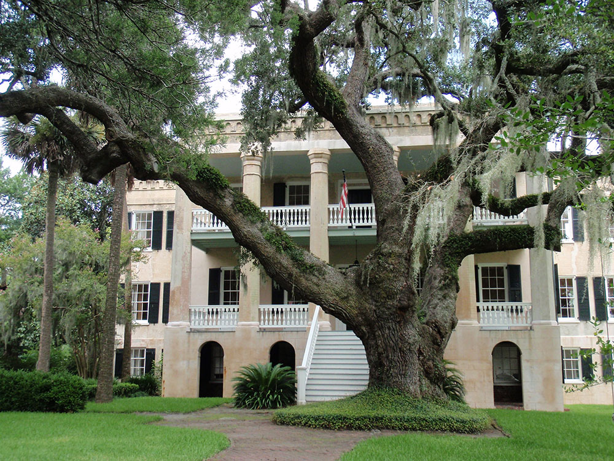
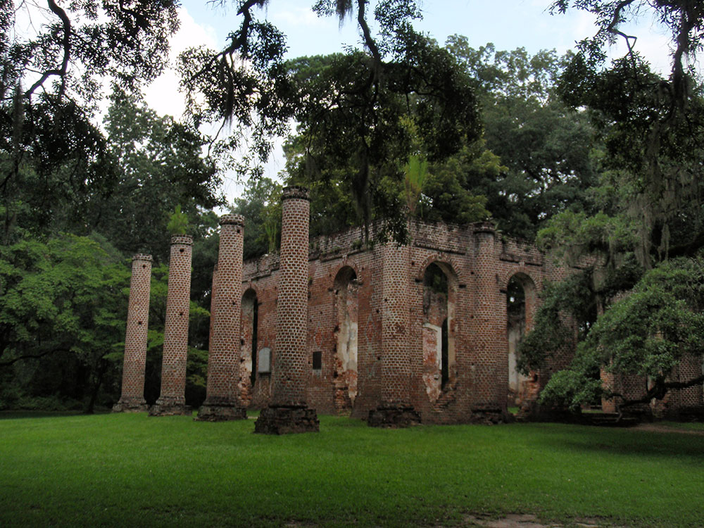
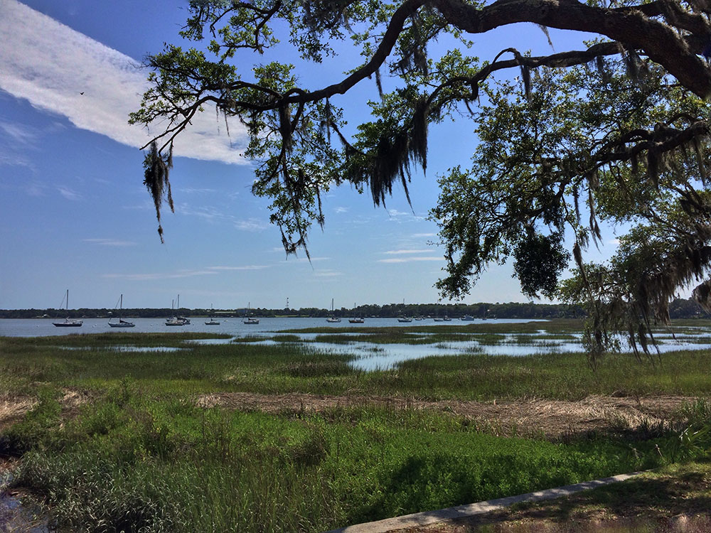
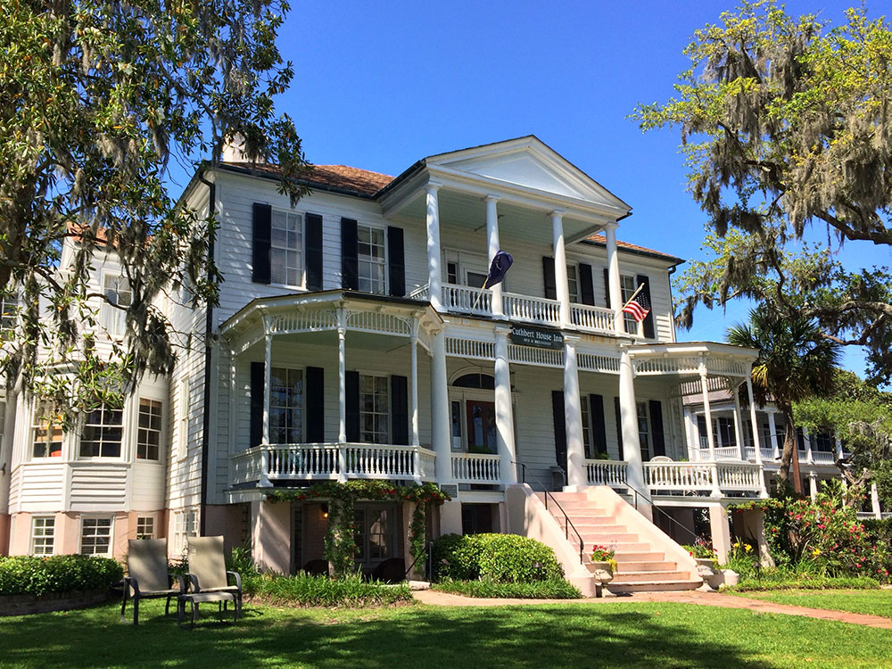

Second-oldest city in South Carolina, renowned for its scenic location preservation of its antebellum architecture
How to Get There
From Charleston, SC (≈70 mi): Take US‑17 S from downtown Charleston and continue south through Mount Pleasant and along the South Carolina Lowcountry, then follow signs into Beaufort where US‑17 becomes Boundary St, leading directly into the city.
Overview
Beaufort (pronounced "BYOO-fort") is a historic coastal town in the South Carolina Lowcountry, on Port Royal Island among the Sea Islands, and it is known for its antebellum mansions, its live oaks hung with Spanish moss, its waterfront park, and its Gullah culture. The town has been the setting for several films, including Forrest Gump, The Big Chill, and The Prince of Tides, based on the novel by local author Pat Conroy. It is also home to Marine Corps Recruit Depot Parris Island and Marine Corps Air Station Beaufort.
Visitors come to Beaufort for the historic district, with its Greek Revival and Victorian homes, and for the Henry C. Chambers Waterfront Park on the Beaufort River. They also come for Hunting Island State Park, for Gullah heritage at Penn Center on St. Helena Island and the Reconstruction Era National Historical Park, and for fresh shrimp and seafood.
History
The Spanish and French both tried to settle the area in the 1500s, and the English founded Beaufort in 1711, making it the second-oldest city in South Carolina after Charleston. The town grew wealthy from rice, indigo, and Sea Island cotton, grown by enslaved Africans, whose descendants, the Gullah people, preserved a distinct culture on the Sea Islands. In 1861, Union forces captured Port Royal Sound and occupied Beaufort, and many of the wealthy planters fled, which spared its mansions from burning. The area was the site of the "Port Royal Experiment," in which freed people were given land and schools, and Robert Smalls, who escaped slavery by commandeering a Confederate ship, became a U.S. congressman from Beaufort.
Sightseeing and Popular Landmarks
The Beaufort Historic District is a National Historic Landmark with more than 300 antebellum buildings, such as the "Castle" and the John Mark Verdier House, and Bay Street is lined with shops and restaurants. The Henry C. Chambers Waterfront Park has swings, a marina, and views of the river, and St. Helena's Episcopal Church dates from 1724. Hunting Island State Park, a few miles away, has a lighthouse that visitors can climb and a beautiful beach, and the Parris Island Museum has exhibits on the Marine Corps.
Culture and Museums
The Penn Center, on St. Helena Island, was one of the first schools for freed slaves and is a center of Gullah heritage, and is part of the Reconstruction Era National Historical Park. The Beaufort History Museum and the Parris Island Museum cover local and military history, and the Gullah Geechee Cultural Heritage Corridor celebrates the people's traditions. The Beaufort Water Festival in July and the Shrimp Festival are annual events.
Parks
Hunting Island State Park is the most visited state park in South Carolina, with 5 miles of beach, a maritime forest, and a lighthouse. The Port Royal Sound, Sands Beach, and Pinckney Island National Wildlife Refuge offer birdwatching and boating, and the Spanish Moss Trail is a rail trail that runs from Beaufort to Port Royal. Kayaking tours in the salt marshes are popular.
Seasons and Weather
Beaufort has a humid subtropical climate. Summers are hot and humid, with highs in the low 90s°F, and winters are mild, with highs in the 60s°F and almost no snow. Spring and fall are the most pleasant seasons, and hurricane season runs from June to November.
Things to Do
Stroll the Historic District
Walk beneath the live oaks past historic homes and boutiques.
Visit Henry C. Chambers Waterfront Park
This award-winning park on the Beaufort River is the heart of the city, with swings over the water and shaded paths.
Tour Historic Homes and Museums
The John Mark Verdier House Museum, Beaufort History Museum, and antebellum mansions that survived the Civil War offer guided tours of colonial, Civil War, and Reconstruction-era history.
Explore Gullah-Geechee Culture
Cultural tours, local seafood, art galleries, and festivals highlight the Lowcountry's traditions.
Get on the Water
Dolphin cruises, kayaking, paddleboarding, and nature tours explore the nearby waterways and marshes.
Top Trails
| Trail | Length | Difficulty | Highlights |
|---|---|---|---|
| Cypress Wetlands Boardwalk | About 0.5 miles round trip | Easy | Wetlands with turtles, alligators, and interpretive signs in Port Royal |
| Waterfront Park Walk | About 1 mile round trip | Easy | Beaufort River, marina, and historic downtown views |
| Spanish Moss Trail | About 10 miles one way | Easy | Paved rail-trail through Beaufort and Port Royal past marshes and parks |
| Hunting Island trails | Varies | Easy | Maritime forest, lagoons, salt marshes, and beaches a short drive away |
This article uses material from Wikipedia as well as information from official tourism and institutional sources. Key references include Beaufort Area Visitors Bureau, National Park Service Reconstruction Era National Historical Park, Penn Center, Hunting Island State Park, Discover South Carolina, and National Weather Service Charleston. Wikipedia material is from the articles "Beaufort, South Carolina" and "Robert Smalls", and is available under the Creative Commons Attribution-Share-Alike License 3.0.





